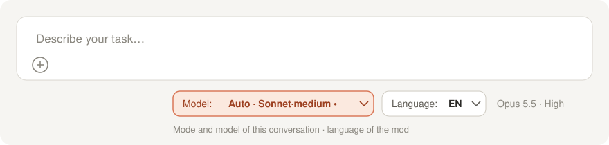
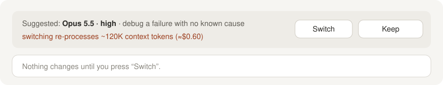
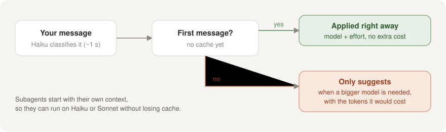

Haiku for the simple, Sonnet for the scoped, Opus by default, Fable for the ambitious. model-router picks following Anthropic's guide and never re-processes your context without asking.

It opens a menu: mode for this conversation (app's model, Suggest, Auto), pin a model, effort, language, and six colour swatches beside the title for the menu's colours (light, light cream, sage green, dark cream, dark, night blue). Each conversation remembers its mode; new ones start off.
Model and effort from Anthropic's guide and four questions: back-and-forth? costly mistake? long critical job? otherwise medium. Generic subagents go to cheaper models.
Tells you in one line which model and effort to pick, and writes a handoff for a new conversation when switching mid-way would re-process everything. In Cowork, a Haiku reader subagent does the long reading.
Switching model mid-conversation re-processes the whole context, because the cache belongs to each model. So model-router only switches by itself on the first message. After that it suggests, shows how many tokens it would cost, and waits for you to press Switch.


Everything applies to one conversation. The same diagrams, with more detail, are in DECISION-TREE.md.
/plugin install model-router --marketplace LuisPuertollano/claude-model-router
Answer y to Add marketplace? and choose the user scope. From a shell: claude plugin install model-router --marketplace LuisPuertollano/claude-model-router
Click + next to the prompt box → Plugins → Add marketplace with LuisPuertollano/claude-model-router → Add plugin. Chat and Cowork load the model-advisor skill (and, in Cowork, the haiku-reader subagent); the ↯ button and its menu are Claude Code only.
Paste this into Settings → Profile → personal preferences on claude.ai:
At the start of each new task, use the model-advisor skill to tell me in one line which Claude model and effort level fit it. If switching mid-conversation would re-process a long context, suggest a new conversation with a handoff instead.
| Control | Effect (this conversation only) |
|---|---|
| Model: app's | Off: the model picked in the app is used. |
| Model: Suggest | Shows the suggestion; nothing changes until you press Switch. |
| Model: Auto | Picks on the first message; afterwards only suggests upgrades, with their cost. |
| Model: Pin Opus… | Pins that model in this conversation. |
| Language: ES · EN · DE · FR | Language of the mod (all conversations). |
| Effort: low … max | With a model chosen, changes only the effort. With none, pins nothing: the effort applies to the app's model. |
| Palette: six swatches | Colours of the menu only, from light to dark (all conversations). |
/modelo opus high | Pins model and effort. |
/modelo high | Effort only, same as the menu. |
/modelo libre | Back to the app's model and effort. |